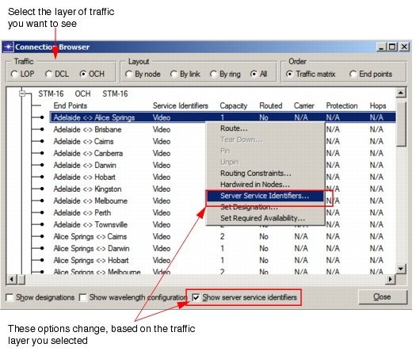

Routing > Service Identifiers > Applying Service Identifiers to Connections
Applying Service Identifiers to Connections
When you have defined the service identifiers for your network, you can add them to a connection. This lets you specify a service for a particular customer, for example. You can add one or more of the defined Service Identifiers to a connection using the Connection Browser.
At the DCL layer, you can set "Client Service Identifiers" to identify which connections represent which services. At the OCH layer, you can set "Server Service Identifiers" to identify which wavelengths support which services.
Procedure 6-9 Applying Client Service Identifiers to Connections
- Open the Connection Browser by choosing Network > Connection Browser.
The connection browser opens.
Figure 6-18 Connection Browser

- Select the layer of traffic you want to see (DCL or ODH) from the Traffic radio button selection.
- Select the "Show client service identifiers" checkbox in the DCL layer or "Show server service identifiers" checkbox in the OCH layer to see service identifier assignments.
- Manage Client or Server Service Identifiers.
- Right-click on a connection in the Connection Browser and select "Client Service Identifiers" or "Server Service Identifiers".
- Add/Remove/Remove All service identifiers from the selected connection, where Remove allows you to select individual service identifiers to remove from the connection.
- Click OK to apply changes.
- Click Close to exit the Connection Browser.
End of Procedure 6-9
| Home © 1987-2007 OPNET Technologies, Inc. All Rights Reserved. This software may be covered by one or more U.S. Patents. See complete patent notice in the Legal Notices section. OPNET Support Center |